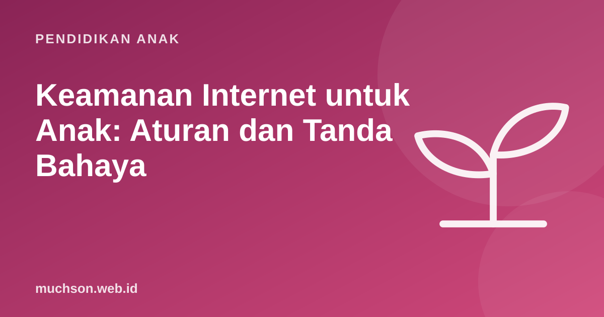

Beranda › Artikel › Pendidikan Anak
Pendidikan AnakKeamanan Internet untuk Anak: Aturan dan Tanda Bahaya
Internet membuka dunia untuk anak, tetapi juga membuka pintu bagi orang asing, perundungan, dan penipuan. Kita tidak bisa mengawasi setiap detik. Yang bisa dilakukan adalah membekali anak dengan aturan yang jelas, membangun kepercayaan agar ia mau bercerita, dan mengenali tanda bahaya sejak dini.

Lima aturan inti yang mudah diingat anak
Aturan nomor 3 adalah yang paling penting. Banyak anak tidak bercerita karena takut gawainya disita. Sampaikan dengan jelas: "Kalau kamu cerita, kita selesaikan bersama. Gawaimu tidak otomatis diambil."
Risiko utama dan tandanya
| Risiko | Seperti apa | Tanda yang bisa terlihat |
|---|---|---|
| Perundungan daring (cyberbullying) | Ejekan, penyebaran foto memalukan, dikeluarkan dari grup | Murung setelah memegang HP, menghindari sekolah, menghapus akun tiba-tiba |
| Grooming | Orang dewasa mendekati anak, memberi perhatian atau hadiah, lalu meminta rahasia atau foto | Teman baru yang dirahasiakan, hadiah tak jelas asalnya, gawai buru-buru disembunyikan |
| Penipuan | Hadiah palsu, top up murah, akun game dicuri | Meminta uang atau kode OTP, akun tiba-tiba tidak bisa dibuka |
| Konten tidak pantas | Kekerasan, pornografi, tantangan berbahaya | Pertanyaan atau istilah baru yang mengkhawatirkan, perubahan perilaku |
| Privasi bocor | Lokasi, sekolah, atau rutinitas terlihat publik | Ada orang asing yang tahu detail kehidupan anak |
Grooming: pola yang perlu dikenali
Grooming adalah upaya orang dewasa membangun kedekatan dan kepercayaan anak dengan tujuan mengeksploitasi. Polanya sering bertahap, sehingga anak tidak menyadarinya:
Jika anak mengalami masalah
- Tetap tenang. Reaksi marah bisa membuat anak menyesal bercerita.
- Dengarkan dan terima kasihi anak karena berani bercerita.
- Simpan bukti. Tangkapan layar pesan, nama akun, tanggal. Jangan membalas pelaku.
- Blokir dan laporkan akun tersebut di platformnya.
- Hubungi pihak terkait: sekolah jika melibatkan teman sekolah, kepolisian jika ada ancaman atau eksploitasi.
- Cari dukungan untuk anak bila ia terlihat sangat terguncang.
| Layanan | Untuk apa |
|---|---|
| SAPA 129 (Kementerian PPPA) | Pengaduan kekerasan terhadap perempuan dan anak, telepon 129 |
| aduankonten.id (Komdigi) | Melaporkan konten negatif di internet |
| Kepolisian | Ancaman, pemerasan, atau eksploitasi seksual |
| Fitur lapor di aplikasi | Akun dan konten yang melanggar aturan platform |
Percakapan rutin yang membangun kepercayaan
Keamanan internet bukan satu kali ceramah. Ia dibangun lewat obrolan kecil yang rutin dan santai. Beberapa pembuka percakapan:
- "Game apa yang lagi seru di sekolah? Boleh ajarin Papa?"
- "Pernah lihat sesuatu di internet yang bikin kamu kaget atau bingung?"
- "Kalau temanmu diejek di grup, menurutmu apa yang sebaiknya dilakukan?"
- "Siapa saja teman main game-mu? Kamu kenal mereka di dunia nyata?"
Pilih ruang digital yang aman sejak awal
Pencegahan terbaik adalah memilih platform yang dirancang untuk anak: tanpa iklan yang menjebak, tanpa obrolan dengan orang asing, dan dengan moderasi yang jelas. Prinsip ini saya terapkan di PixelKode: anak berkarya dan berbagi hanya di galeri kelasnya, dengan reaksi dan komentar pendek yang bisa dihapus guru.
Tanya jawab
Apa yang harus diajarkan anak tentang keamanan internet?
Apa tanda anak menjadi korban cyberbullying?
Apa itu grooming online?
Ke mana melapor jika anak mengalami kekerasan daring?
Sumber dan bacaan lanjut
- UNICEF: Cyberbullying, apa itu dan cara menghentikannya
- Aduan Konten Komdigi
- Komdigi: Tunaspedia (PP Tunas tentang pelindungan anak di ruang digital)
- AAP Family Media Plan